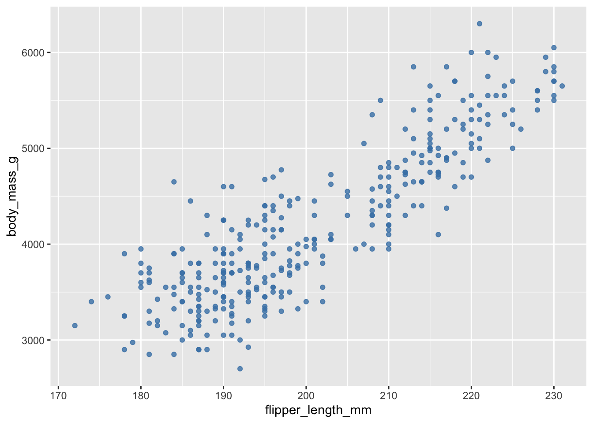

Lab 4 Appendix: ggplot
Setup
peng <- palmerpenguins::penguins
peng <- peng %>% filter(!is.na(flipper_length_mm), !is.na(body_mass_g))Learning objectives
- Build a plot with the ggplot grammar:
ggplot(data) + aes(...) + geom_*()
- Understand aesthetic mapping vs. setting (e.g.,
aes(color = species)vscolor = "steelblue").
- Make histograms, bar charts, and scatterplots; add
trend lines.
- Add labels, scales, themes.
Basics
A ggplot has three core parts:
- Data: a data frame
- Aesthetics: variables mapped to visual channels (eg x, y, color, fill, size, shape)
- Geometries: what you want ggplot to draw (eg points, lines, bars, boxes, histograms, etc.)
ggplot(data = peng, mapping = aes(x = flipper_length_mm, y = body_mass_g)) +
geom_point()
Mapping vs. Setting
- Mapping (inside
aes()): change a style based on a variable. - Setting (outside
aes()): a constant style.
# Mapping color to species (legend appears)
ggplot(peng, aes(x = flipper_length_mm, y = body_mass_g, color = species)) +
geom_point(alpha = 0.8)# Setting color to a single value (no legend)
ggplot(peng, aes(x = flipper_length_mm, y = body_mass_g)) +
geom_point(color = "steelblue", alpha = 0.8)
Univariate plots
Histogram (numeric)
ggplot(peng, aes(x = flipper_length_mm)) +
geom_histogram(binwidth = 5, boundary = 0, closed = "left", fill = "grey70", color = "white") +
labs(x = "Flipper length (mm)", y = "Count", title = "Distribution of flipper length")Bar chart (counts per category)
ggplot(peng, aes(x = species)) +
geom_bar(fill = "grey70", color = "white") +
labs(x = "Species", y = "Count", title = "How many penguins per species?")Try it: Change the histogram binwidth to 2.
What differences do you see?
# [Your Code Here]Bivariate plots
Scatter with groups and a trend line
ggplot(peng, aes(x = body_mass_g, y = flipper_length_mm, color = species)) +
geom_point(alpha = 0.8) +
geom_smooth(method = "lm", se = FALSE) +
labs(x = "Body mass (g)", y = "Flipper length (mm)", color = "Species",
title = "Flipper length vs body mass by species")
Aesthetics you might use
color/fillfor categories
shapefor categories (works with points)
sizefor numeric (use sparingly)
ggplot(peng, aes(body_mass_g, flipper_length_mm, shape = species)) +
geom_point(alpha = 0.8, size = 2.8)Try it: Map alpha to a variable. Why is this
usually a bad idea?